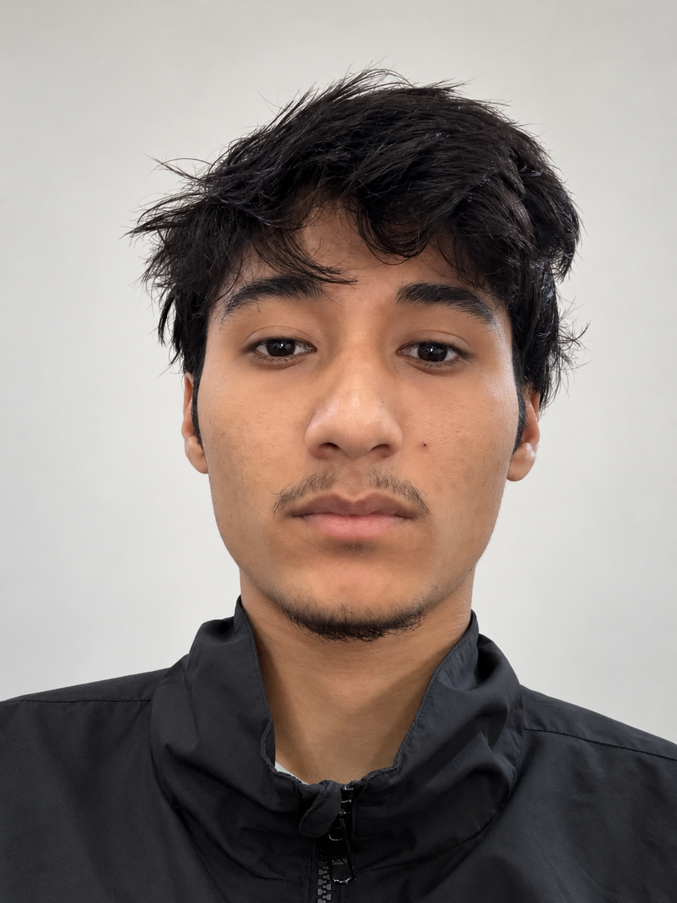

About me
BUILDING
MY FOUNDATIONS.
I’m not presenting myself as an expert. I’m a student who enjoys understanding how models work, writing code, and steadily moving toward AI engineering.

AI / ML StudentNepal
I’m 19 and based in Nepal. I study at Presidential Graduate School in Kathmandu, affiliated with Westcliff University. My current focus is building strong fundamentals in programming, data, and machine learning rather than trying to present a finished career before I have one.
UNIVERSITY EMAILa.budha.8747@westcliff.edu
19Years old
01Direction: AI engineering
∞Things left to learn
Education
CURRENT
Bachelor of Science in AI and Machine Learning
Presidential Graduate School, Kathmandu · Affiliated with Westcliff University
FOCUS
Artificial Intelligence & Machine Learning
Classical machine learning concepts completed; continuing toward deeper AI engineering skills.
Top technology interests
01
Machine Learning
Classical ML, model building, data preparation, evaluation, and learning algorithms.
02
AI Engineering
Turning models into practical AI systems through Python, data, APIs, and software engineering.
Current toolkit